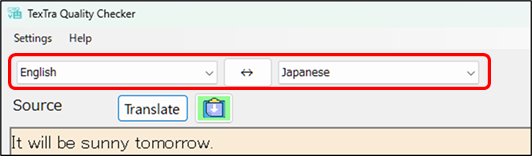
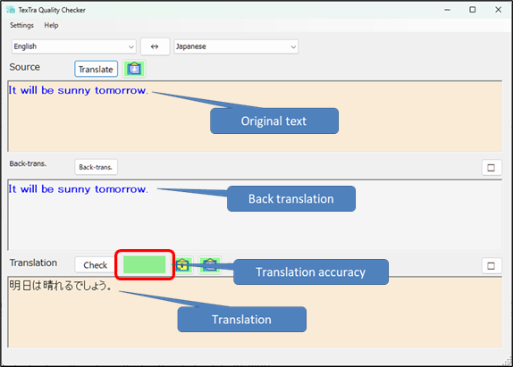

Translation
Please select the translation languages
and press the Translate button.

Translation,
back?translation, and translation
accuracy
check will be performed.

Translation accuracy has three
levels:
Light green > High
Yellow >
Medium
Red > Low
When the translation
accuracy is low,
you can improve it by revising either the source
text or the translated text.